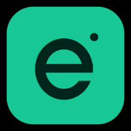

DALAM RADAR
Harga pasangan DEXToken yang diperhatikan
Pantauan token akun kamu. Harga mengikuti pasangan dengan likuiditas terbesar yang ditemukan.
Masuk untuk menjelajahi peta wallet, menyusun pantauan, dan membaca pergerakan aset.
Semua akun baru, melalui Google maupun email, perlu persetujuan superadmin sebelum menggunakan aplikasi.
Menyiapkan login…
Google atau email, tanpa menghubungkan wallet.
Kata sandi dikelola oleh Firebase Authentication.
Tempel CA. Jaringan dicari otomatis; jika ada beberapa hasil, pilih jaringan token.

Pasang Easykripto di layar utama.
Lihat aktivitas wallet. Temukan hubungan di baliknya.
Pantauan token akun kamu. Harga mengikuti pasangan dengan likuiditas terbesar yang ditemukan.
Volume memakai 24 jam pada semua rentang. Rasio beli dan indikasi fase membutuhkan minimal 10 transaksi pool, bukan bukti akumulasi wallet.
Belum ada snapshot pasar.
Sampel maksimal 40 token dari pool trending dan baru pada jaringan terpilih. Peringkat bukan seluruh pasar. MC = kapitalisasi pasar; FDV = valuasi seluruh supply. Skor relatif terhadap token yang lolos filter dan bukan sinyal beli. Risiko yang belum diperiksa tetap ditandai.
Pilih transfer untuk menelusuri alamat wallet, atau holder untuk memeriksa CA token Solana.
Garis menunjukkan transaksi yang teramati. Hubungan antarwallet tidak membuktikan pemilik yang sama.
Memuat pantauan…
Saldo native dan sampel aktivitas wallet.
Geser tabel ke samping untuk melihat semua kolom.
| Wallet | Jaringan | Saldo native | Status & pembaruan | Aksi |
|---|
Harga pasangan dan perubahan dalam 24 jam.
Geser tabel ke samping untuk melihat semua kolom.
| Token | Jaringan | Harga USD | 24 jam | Pembaruan | Aksi |
|---|
Menampilkan jaringan terpilih. Pantauan terpisah per akun. Pilihan jumlah baris berlaku untuk kedua tabel; halaman wallet dan token dapat dipindahkan masing-masing. Lonceng memeriksa sampel baru secara bergiliran saat aplikasi terbuka.
Tinjau akun Google dan email. Hanya superadmin yang dapat mengubah keputusan.
Aktivitas aplikasi, dalam angka.
Data akan dimuat setelah akses superadmin dikonfirmasi.
Kenali pemakaian, pembatasan, dan respons setiap sumber data.
Menyiapkan statistik API…
Grafik akan terisi setelah ada permintaan API yang tercatat.
| Waktu | Permintaan | Gagal | Rata-rata |
|---|
Permintaan Worker tidak dicampur agar panggilan RPC tidak terhitung dua kali.
Batas ini untuk peringatan pemakaian Easykripto, bukan kuota resmi paket provider. Hari dimulai pukul 00.00 WITA. Kosongkan jumlah untuk menonaktifkan batas; tidak ada pemblokiran otomatis.
| Waktu | Provider | Jaringan | Metode | Status | Durasi | Sumber |
|---|
Belum ada log pada filter ini.
Panel diperbarui setiap 60 detik selama superadmin membuka aplikasi pada tab aktif. Log server mencatat panggilan RPC nyata; data API publik berasal dari laporan browser dan dapat tidak lengkap. HTTP 429 berarti pembatasan permintaan, bukan bukti kuota bulanan habis. Penggunaan di luar Easykripto, credit/CU provider, dan quota tagihan akun belum terhubung. Lihat pemakaian resmi di Helius, Alchemy, atau Cloudflare.
Belum ada data yang dimuat.
Kunjungan dicatat dari browser sejak pencatatan diaktifkan. Pemblokir pelacakan dapat membuat sebagian kunjungan tidak tercatat. Akun lama akan tampil setelah sinkronisasi. Semua waktu menggunakan WITA.